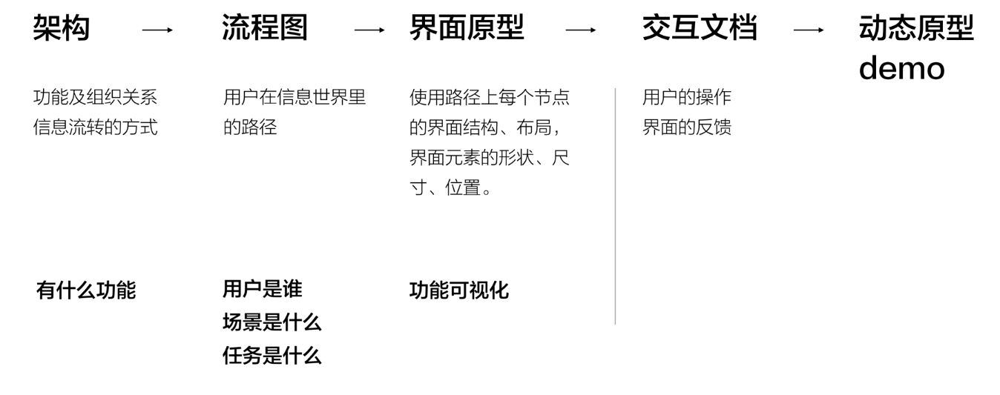

一、交互设计，用户体验，产品三者的关系
1.产品设计——造物，赋予人性
- 技术是产品的骨架
- 艺术是产品的容貌
- 用户体验是产品的灵魂
2.用户体验从何而来
- 预期（是否有想要的功能）=>过程（使用）=>影响（是否达成目标）
3.用户体验设计的5个层次
- 1）战略层：了解预期，竞品分析，领域调研
- 2）范围层：规划功能、定位，用户分析，产品概述、功能规格
- 3）结构层：用户画像，交互模型（用户易于理解的概念模型）
- 4）框架层：信息架构（功能的结构和组织方式各功能模块间的状态），交互流程（任务分析和页面流程），界面原型（可视化的界面元素组织）
- 5）表现层：视觉风格（色彩，结构和布局），细节设计
二、重新认知交互
1.interaction，反馈+动作=行为
2.交互：人与人、人与环境、人与物
三、UED，UE，Ux，IxD，UI概念解析
1.UED，UE，Ux，IxD，UI
- UED：用户体验设计，用户体验部
- UE：交互设计师/体验设计师
- Ux：交互设计，交互设计师
- IxD：交互设计
- UI：UI设计，界面设计/视觉设计
2.UE/Ux设计界面操作反馈，UI设计尺寸格式样式
四、交互设计流程及关键要素
1.交互设计流程

2.交互设计要素
- 用户：人
- 场景：时间、地点、环境、心理
- 任务：做什么（目标、行为）
3.交互设计：用设计讲述用户的故事，用户的目标、动机和行为界面的反馈
五、界面设计要素
1.草图=>原型图=>UI（效果图）
2.界面设计应该要考虑哪些方面？

六、App/Web界面尺寸、结构和布局
1.了解平台：Android、IOS
2.IOS

3.原型尺寸用实际尺寸的一半就可以
4.实际原型用：375*667

八、App/Web标题、标签、正文
1.文字规范
2.字号：舒适值，长文22px~34px（18px），短文32px（16px），注释28px（14px）
九、App/Web导航
1.导航方式：标签、抽屉、舵、宫格、Tab、列表、轮播、瀑布
十、App/Web操作栏
1.按扭根据操作定义形式
十一、App/Web搜索
1.三种形式：标题搜索栏、搜索栏、小图标
2.左边返回，右边取消等
3.初始状态（历史、语音）、搜索过程（自动完成）、搜索后（快速清空）
十二、App/Web列表，选项卡，表单
1.下拉刷新、左右横滑
2.筛选：下拉、抽屉展开
十三、App/Web弹窗，警告，提示
1.积极正向操作放右边，消极、负向操作放左边
2.提示：中间、上面，自动消失或手动关闭
3.toast：入场500ms，停留2000ms，退出500ms
十四、App/Web按扭，菜单
1.常用状态：NORMAL、PRESSED、DISABLED
十五、App/Web用户操作和界面反馈
1.手势
2.动效：传达状态，增强用户对于直接操纵的感知
十七、界面设计秘籍1—信息的可视性表达
1.信息化表达
- 1）信息归类（根据信息的逻辑关系给信息分组）
- 2）对齐
- 3）主次，层级，聚焦（通过位置，大小，字体，粗细区分主次和层级，通过颜色 、形状、大小、位置突出主要信息）
- 4）图文结合
十八、界面设计秘籍2—实用技巧实例
1.尽量使用单列而不是多列布局：列布局能够对全局有更好的掌握。同时用户也可以一目了然内容。而多列则会有分散用户注意力的风险使你的主旨无法很好表达
2.放出礼品往往更具诱惑力：建立在人们互惠准则上
3.合并重复的功能使界面简洁：时刻警惕冗余的功能模块，它无用且降低了电脑性能。此外，界面上的模块越多，用户的学习成本就越大
4.将选项与按扭区分开来：诸如颜色，层次及模块间的对比这些视觉上的设计可以很好地帮助用户使用产品，需要将可点击的元素，可选择的元素以及普通的文字明显区分开来
5.给出推荐而不是让用户来选择：当展示许多项服务时，给出一个重磅的推荐项是个不错的做法，尽管推荐的设置无法满足所有用户
6.给出撤销操作来替代确定操作：为了防止误操作而设计的确认窗口其实是不人性化的，所以考虑在你的产品里实现撤销操作来增加用户的操作友好度吧
7.界面要鲜明对比让人容易区分：把主要功能区从界面中突出显示出来效果会好很多，互补色，明暗色调，阴影渐变等
8.精简表单内容：表单不要太长，只要必需的字段
9.暴露选项而不要将操作隐藏：下拉框不如直接罗列显示出来
10.不要放太多链接分散用户注意力：将导航与操作链接用样式区分开，尽理移除页面不需要的链接会让用户点击到你的功能按扭
二十六、交互文档-重新认识交互文档的地位及作用
1.交互文档：静态的表达和描述交互过程（界面、操作、反馈）
2.文档

3.交互文档所处的位置和作用
- 位置：承上启下
- 作用：可视化、标准化、指导性
二十七、交互文档-如何制作
1.界面：帮助用户完成任务
2.标注动作和反馈

- 用户的：操作、作用点
- 界面的：反馈、状态
3.标注要点：链接指向，边界状态，字符限制，校验……
4.标注原则：易读，易共享，先重后轻
5.标注图示

三十、可用性测试
1.有用，易用，视觉美，品牌传达
2.如果衡量产品可用性
- 1）功能是否必要（功能）
- 2）场景是否连贯（场景）
- 3）角色是否清晰（角色）
- 4）操作是否简洁（操作）
3.认知（理解界面的功能）、效率（操作界面，点击，滑动等）
4.可用性测试：A/B test、现场观察、用户访谈、数据埋点分析、眼动测试
5.开展可用性测试的步骤
- 1）设定目标：发现用户痛点、为版本体验改进提供依据
- 2）设计任务：子任务、步骤
- 3）选择用户：产品经理，设计师，开发，销售，客服，真实用户
- 4）执行：发日程（任务描述，时间，地点，测试时长）

6.测试过程中
- 1）观察，记录：用户操作（顺序，停留时间）、表情
- 2）倾听：完成任务后的访谈，让“用户”诉说痛点，期望
三十一、设计规范及输出物
1.建立规范的目的，UED来做
- 1）统一设计风格，保证界面视觉及交互的一致性
- 2）降低设计人员与产品及开发人员的沟通成本，提升效率
2.普适原则，1->2->3
- 1）简洁一致
- 清晰简单
- 相同及类似功能的界面表现形式统一
- 2）高效
- 界面能帮助用户更好更快完成任务
- 提升用户效率
- 3）美
- 传达美和愉悦的感受
3.视觉规范与交互规范的区别

4.从形式区分
- 1）风格指南
- 2）模式库
- 3）规格说明
三十二、允许用户犯错
1.人的行为依据经验和本能
2.经验不一定是对的，本能=欲望=探索=犯错
3.出错前：防患未然
- 1）引导提示
- 针对新用户，对新功能不了解时，指导用户操作
- 为操作和操作结果提供详尽的说明文字和指导方向
- 重要操作或操作结果不可逆时，询问用户让其知道操作后果
- 预览结果
- 2）限制行为
- 适当限制某些交互操作
- 增加不可逆转操作的难度
- 3）减轻负担
- 减轻记忆负担、减少认知混淆
- 让用户单次只需执行唯一操作、减少不必要操作
4.出错后
- 1）反馈和帮助
- 当某些错误发生时，及时反馈错误并提供纠错帮助
- 反馈信息清晰、精炼、忌空泛、模糊
- 反馈信息友好、不责备用户
- 2）错误恢复：补救
- 尽可能注意保留操作信息，提供安全恢复到离错误点最近一步的方式
- 允许用户犯错，并使操作者能够撤销以前的命令
- 能帮助用户在发生错误后迅速回到正确状态
三十八、边界状态
1.边界状态：
- 1）用户操作时：滑动、滚动到内容边界时，内容和屏幕的边界
- 2）内容展示时：无内容->有内容->溢出
- 3）系统运行时：正常，异常（出错、断网等）
2.如何设计
- 1）从行为洞察的内心，自下而上
- 2）洞察行为、捕捉动机、满足期望、预测行为
- 3）引导用户获取空页面，内容溢出->规范格式
- 4）系统异常：告知原因、补救、安慰
四十一、用户画像
1.是真实用户的虚拟代表，是建立在一系列真实数据之上的目标用户模型
2.解决的问题：用户是谁？他的工作和生活是什么样的？清晰的描述用户，在产品设计过程中能够抛开个人喜好，关注目标用户的动机（目标）和行为（任务）进行设计
四十二、交互模型
1.交互模型：在界面和流程图之前画

2.模型案例

四十三、信息架构
1.为了让功能可视化

2.信息架构组件
- 1）组织系统
- 2）标签系统
- 3）导航系统
- 4）搜索系统
3.信息架构的作用
- 1）功能的可视化表达
- 2）让用户理解产品的功能，会用产品的功能
- 3）让功能更好（易）用
4.心理模型：人类习惯于对外界事物加以解释，形成针对事物作用方式，事件发生过程的概念模型
5.表现模型：事物的表现形式
6.实现模型
四十四、交互设计原则
1.可学习：可视性、匹配、启发性
2.可探索：容错
3.一致、简洁、流畅
4.及时反馈
四十七、交互设计的3个层次
1.定义：产品的行为以及和产品使用密切相关的产品形式
2.预测：产品的使用如何影响产品和用户的关系，以及用户对产品的理解
3.探索：产品、人和物质、文化、历史之间的对话
五十、产品的形式和行为
1.行为：举止行动，指受思想支配而表现出来的外在活动，如作出动作，发出声音，作出反应
2.行为表现为一系列的动作；需要形式来传达；有内存逻辑
3.行为发生要素：动机、能力、触发
4.行为发生的过程
- 1）确定目标/动机
- 2）确定意图（要怎么做：确定任务）
- 3）明确行动内容（步骤）
- 4）执行
- 5）感知外部世界的状况
- 6）解释外部世界的状况
- 7）评估行动结果
五十九、降低记忆负荷
1.固定位置
2.最少化元素、选项、步骤
3.及时提醒
六十、降低视觉负荷
1）简单清晰的结构布局
2）最少化界面元素
3）突出关键信息
4）层次和节奏，视觉引导
六十一、降低物理负荷
1）减少用户的操作数量
2）减少用户的操作难度
六十二、工具的良好行为
1.恭敬顺从
- 1）友好，礼貌
- 2）请求，不自作主张
- 3）不打扰，不轻易中断
2.关心和帮助
- 1）引导，提示
- 2）及时反馈